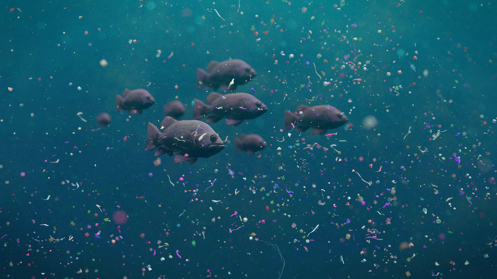
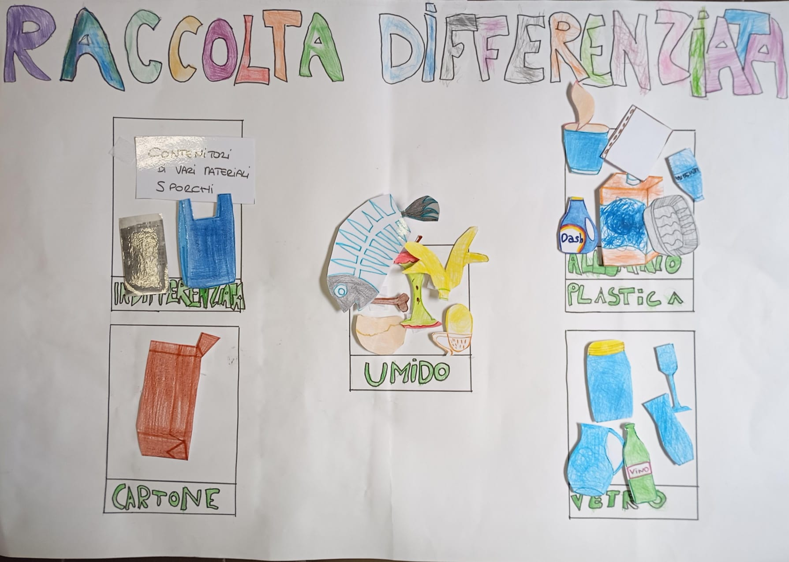

L’inquinamento da microplastiche è una grave emergenza ambientale causata da minuscole particelle di plastica che si diffondono facilmente in acqua, aria e suolo, danneggiando gli ecosistemi.
Le microplastiche danneggiano gli ecosistemi accumulandosi negli organismi, diffondendo sostanze tossiche e alterando suolo e acqua. Questo aumenta il rischio di estinzione di varie specie viventi.

Delle possibili soluzioni per ridurre l'inquinamento da microplastiche e quindi proteggere gli ecosistemi sono:
